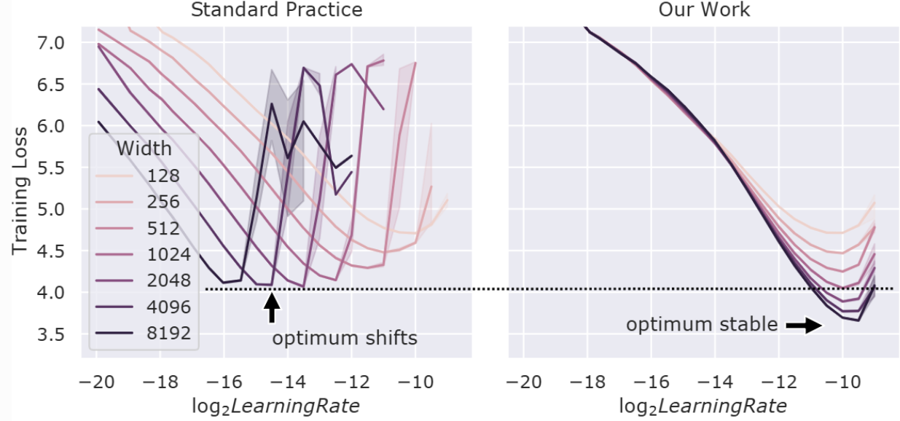

深度学习必将拥有一套科学理论 · 翻译
[2604.21691] There Will Be a Scientific Theory of Deep Learning
备注：
这篇文章十分高屋建瓴地把学习理论的前沿探索整理到了一起，形成一篇纲要目录式的讲解。
它把深度学习的优化过程视作一种“动力学”，我们的研究方法往往是某一个切面，可这些切面慢慢以点带面、形成了一整套理论方法。例如 μP 理论是从“宽度无限的网络”发展而来的理论，却真正发现了有限维时“宽度”这一超参数与其他超参数的关系，真正实现了“把从小模型调好的参数迁移到大模型”，成为事实上的调参标准，深刻指引了从GPT-4开始往后的每一代大模型的训练。
连 Stanford CS336 都这么快就把它写进讲义了，可见其教科书级别的泛用性这篇文章为探索者打开新世界的大门，其涉及的研究问题均是当下学习理论和大模型所期待解决的问题，当下的进展却远远谈不上彻底解决。于是，我们记录“我们已经走到了哪里”，目标是探寻“我们将要去到哪里”。
阅读导览
这篇论文提出一个核心主张：深度学习正在形成一套真正的科学理论，而它的形态将是一种“学习力学”——从第一性原理出发、高度数学化地研究训练过程的动力学。作者将机制可解释性比作“深度学习的生物学”（定性解剖模型），而学习力学则是“深度学习的物理学”（定量研究学习如何展开）。全文围绕一个关键观察展开：学习就是参数空间中的运动，而物理学提供了思考运动的成熟工具；加之深度学习系统完全可测量，这为理论研究创造了前所未有的条件。
论文从五个“口袋”论证理论正在涌现：存在可解析求解的设定、有洞察力的极限揭示基本行为、简单方程捕捉宏观统计量、超参数可被解耦理解、跨设定出现普适现象。各节层层推进——从深度线性网络揭示的“简单性偏好”，到神经缩放定律与边缘稳定性这类宏观规律，再到极限方法（如μP极限）如何连接理论与实践，最后讨论离散化假说、表示相似性、鞍点动力学等前沿问题。贯穿始终的线索是：复杂性无法被约化，但可以被组织、简化、理解。
整体结论是审慎的乐观：这些“口袋”正在拓宽并开始连接，未来十年左右可能汇聚成某种综合理论。论文的姿态是描述性的而非规定性的——它总结正在发生的事情，而非宣告胜利。对读者而言，这篇论文既是一份理论地图，也是一份入门课程：它告诉你问题在哪儿、哪些工具有效、哪些方向开放，以及为什么现在正是参与这个领域的好时机。
引入：深度学习需要一套科学理论
从「生物学」到「物理学」：两种理解深度学习的视角
如果你接触过「机制可解释性」（mechanistic interpretability）这个领域，你会知道它常常把自己定位为「深度学习的生物学」。什么意思呢？它采用一种类似生物学家或系统神经科学家的视角——把训练好的神经网络当作一个需要解剖的有机体，试图拆解它的解剖结构，识别出其中的「回路」（circuits），然后把这些回路与模型「在做什么」「如何思考」的语义解释联系起来。这套方法基本上是定性的科学。
而这篇论文提出的「学习力学」（learning mechanics），希望成为深度学习的物理学——一种从第一性原理出发、高度数学化的对应物。它离语义更远，离训练过程、超参数选择、学习发生的动力学更近。它关心的是：这一切学习过程是如何动态展开的？
- 机制可解释性 ≈ 深度学习的「生物学」：定性地解剖模型，识别回路，联系语义。
- 学习力学 ≈ 深度学习的「物理学」：从第一性原理出发，定量地研究训练过程、超参数选择、学习动力学。
- 两者互补：定量科学能做的事，定性科学很难做到；反之亦然。
为什么深度学习需要一套理论？
你可能会问：有了「生物学」，为什么还需要「物理学」？这背后有几个层面的理由。
实践层面。 深度学习的历史很大程度上是由试错驱动的——看看什么有效、什么无效，实践本身也像在做梯度下降。如果我们有一套真正的理论基础，理解到底是什么在驱动这些工具的成功，我们就能更理论驱动、更高效，也更有能力去思考这些技术带来的风险并设计缓解方案。
科学层面。 这些正在生成文本和图像的极其复杂的机器，到底是什么在驱动它们的成功？这本身就是一个迷人的问题。而且，如果我们真正理解了人工智能的工作原理，它也可能为理解自然智能提供一面透镜。
工程层面的独特困难。 这里有一个很微妙的点。机器学习和大多数工程技术有一个根本区别：我们的选择并不直接进入最终产品。设计一座桥时，你设计的就是桥本身，所以你能理解设计选择如何影响桥是否会倒塌——土木工程理论给了你这种能力。但设计深度学习系统时，你设计的是一个「游乐场」，这个游乐场在自身之上迭代，最终产生一个模型。你的设计选择（数据、架构、学习率、整个流程的超参数）是隐式地影响最终产品的。学习力学在某种意义上就是试图理解：初始条件如何展开成最终结果。
类比：量子物理与神经科学。 用一个类比来理解为什么需要多个层次的科学：仅凭量子物理来解释大脑中的认知是极其困难的，但不理解原子物理，解释神经元为什么放电也是不可能的。如果我们认真对待理解深度学习这个挑战，想要建立一套公开可用的理论，我们就需要在所有抽象层次上研究它——而其中一个层次恰好与物理学相似。
- 桥：你的设计选择直接决定最终产品。你知道材料强度、结构力学，能预测桥在什么条件下会垮。
- 深度学习系统：你设计的是训练环境（数据、架构、超参数），模型在这个环境中「自我迭代」。你的选择隐式地影响最终模型，但你无法直接「看到」设计选择与最终行为之间的因果链。
学习力学要做的，就是建立这条因果链的理论。
学习就是运动
这里有一个非常优美的直觉。学习是一个运动的过程——学习就是改变参数，模型在某个参数空间中移动。而物理学花了几个世纪建立工具、想法和思维方式，来思考物理空间中的运动。所以，理解人工智能或深度学习如何工作的核心，就是理解学习；而学习本质上是运动——这个观察把深度学习与物理学天然地联系在了一起。
还有一个对理论研究极为有利的条件：深度学习系统是完全可测量的，不像生物系统。论文的两位作者（Kan June 和 Dan Kunin）都在伯克利的 Redwood Center 待过，身边全是神经科学家，他们亲眼看到理论神经科学有多难——你可以写下任何你想要的数学模型，但你能测量到的大脑数据极其有限。而深度学习系统没有这个限制，你可以获得训练过程中的一切数据。
- 学习 = 改变参数 = 模型在参数空间中的运动。
- 物理学提供了思考「运动」的成熟工具，可直接迁移到参数空间。
- 深度学习系统完全可测量，这比生物系统（大脑）对理论研究者友好得多。
为什么是现在？
这篇论文有 14 位合著者，他们为什么现在写这篇论文，而不是五年前或十年后？
直接的起因。 一个简单的答案是：他们中的大多数人刚博士毕业。但更深层的故事是——他们最初并没有打算写论文。Jamie（第一作者）把一群在不同机构、不同实验室、但研究相似想法、持有相似视角的博士生聚在一起，组织了一次 retreat。他们去了 Berkshires 的森林里，一起做饭、分享研究想法，待了一周。在这个过程中他们意识到：作为研究者，各自对如何做研究有相当不同的视角；但作为一个领域，大家确实需要把已经取得的成果、内部的直觉、对开放方向和下一步的判断总结出来。这篇论文就是从那次 retreat 中诞生的。
领域的时机。 有几个原因让当下特别有希望：
- 深度学习从未如此可及、如此商品化、如此被广泛研究。 我们现在对训练大规模系统的方法已经有了相当好的共识，这些方法相当可复现、效果也相当好。在大规模模型的方法还在被反复推翻的年代，很难对它们做科学。现在这个 landscape 已经稳定下来了。
- 大多数作者处在职业生涯中能腾出时间做这件事的位置。 可以自由地去研究重要的问题。
- 重要性在上升。 这些技术正在飞速地进入实践，对世界产生各种影响——理解它们的紧迫性在增加。
- 领域积累到了一个临界点。 过去五到七年，深度学习理论这个学术方向一直在推进、成长、变化，也撞过墙。他们看到很多有效的东西，也看到很多无效的。当他们聚在一起评估时，发现一个判断正在形成：这个长期难以找到切入点的努力，实际上开始奏效了——各种不同的线索开始汇聚。
一个重要的姿态：描述性的，而非规定性的。 这篇论文不是要规定领域应该往哪走。作者们说：我们并没有打算写一篇乐观的论文，我们只是讨论了我们认为正在发生的事情，以及下一步应该去哪里，然后发现自然的做法就是把正在涌现的想法集中阐述出来，试图激发 momentum 和 excitement。
对「理论无用论」的回应
过去五到十年，从业者中一直有一种声誉：理论没什么用，或者毫无意义——「我们的经验结果远远领先于我们对神经网络的理论理解」。但作者指出，这在过去并不总是真的——比如我们对随机森林或随机决策树曾经有相当好的理解。言下之意是：深度学习理论之所以显得无用，部分原因是这个问题真的很难，而不是理论本身没有价值。
小结
这一节为整篇论文奠定了基调：
- 学习力学是深度学习的「物理学」——从第一性原理出发、高度数学化、关注训练动力学，与关注语义解释的「生物学」（机制可解释性）互补。
- 深度学习需要理论，因为实践需要从试错驱动转向理论驱动，安全需要可预测性，科学需要理解这些复杂机器，而理解人工系统也可能帮助理解自然智能。
- 学习就是参数空间中的运动，物理学的工具天然适用；且深度学习系统完全可测量，为理论研究提供了前所未有的条件。
- 现在是提出这个理论的好时机：方法已经稳定、领域积累到了临界点、重要性在上升。
- 这篇论文是描述性的而非规定性的——它总结正在发生的事情，而不是规定应该发生什么。
从经验法则到科学理论：五个「口袋」
从"离开理论"到"寻找理论"
在深度学习兴起之前，我们对支持向量机（SVM）等系统好歹还有一套理解和刻画的方式。但到了深度学习这里，感觉差距一下子变大了——我们好像把理论抛在了身后。过去一两年里，究竟发生了什么变化？出现了哪些新工具？哪些东西能给你真正的洞见？
要回答这个问题，得先想清楚"理论"到底是什么。
大实验室里的"缩放科学"
在那些大型实验室内部，有庞大的"缩放科学"（science of scaling）团队。他们想搞清楚的是：每一个超参数如何随其他超参数缩放？把这些关系搞对，对训练大规模模型至关重要——哪家公司在这方面做得更好，下一代模型就可能更强。
识别这些经验性的超参数缩放关系，某种程度上是一种"初级版理论"：你在log-log图上看到一个指数，它看起来是2，在误差棒范围内确实是2，然后你就能用了。当你得到这样清晰的信号时，它确实有用——在大规模训练变得越来越系统化的今天，早期就把事情做对（而不是穷举所有可能的架构和超参数组合）变得越来越重要。这推动了"缩放科学"视角的兴起。
μP：一个理论指导实践的典范
理论社区里有一个著名的例子，叫做最大更新参数化（Maximal Update Parameterization，简称μP）。μP催生了一种叫μTransfer的技术：把某些超参数（比如学习率）从小模型"迁移"到更大的模型上。这项技术取得了突破性的成功，被广泛使用，现在已经融入了人们思考模型扩展的方式。

每个实践者都遇到过的问题
训练大模型时，你要设定一堆超参数：学习率、深度、宽度、Transformer里的头数……列出来能说一个小时。你花几个小时、几天甚至几周去训练大模型，结果效果不如预期。你心想：超参数设错了。
但问题是，直接在大模型上试不同组合太贵了。于是你转向小模型，找到好的超参数，再搬回大模型——结果它们在大模型上表现并不好。
μTransfer怎么做
μTransfer的核心思路是：识别出某些无量纲量（non-dimensional quantities），规定它们应该在不同规模下保持不变。具体操作上，它看起来像是：学习率按相对于宽度的某个指数来缩放，同时调整每一层的初始化尺度。通过保持这些与训练和特征学习相关的无量纲量不变，就能把小模型上的良好性能迁移到大模型上。
但问题来了：你怎么知道小模型的结论能推广到大模型？材料性质会随尺度变化——蚂蚁能承受远超自身体重的重量，我们人类就不行。要让小模型对大模型有参考价值，你得理解材料科学中的缩放关系：应力、应变、断裂等量如何随模型变大而变化。
关键在于：在小模型中找出正确的无量纲量，让它们对大模型有预测力。这正是μP/μTransfer在做的事——它就是一个理论如何应用于实践、帮助我们更有效且更便宜地训练大模型的例子。
理论正在涌现的五条证据
基于这些思考，我们提出了五个观察，作为"深度学习理论正在涌现"的证据：
- 存在可解析求解的设定（analytically solvable settings）
- 有洞察力的极限确实揭示了基本行为（insightful limits reveal fundamental behavior）
- 简单方程能捕捉有意义的宏观统计量（simple equations capture meaningful macroscopic statistics）
- 超参数可以被解耦并真正理解（hyperparameters can be disentangled and understood）
- 跨设定和任务出现普适现象（universal phenomena across settings and tasks）
这五条是怎么来的
这五条不是从天上掉下来的。当时我们召集了14位学者，花了三天时间讨论共同愿景。一开始，每个人都在推荐自己偏好的方向——"你应该看这个模型""你应该关注这个极限"。但后来我们发现，这些推荐背后有更强的共性：每一个都不是孤立的建议，而是与过去十年深度学习理论中某些显著成果相呼应，同时指向重要的开放方向。
它们共同有一种"力学"的味道——经典力学或统计力学的味道：学习是关于运动的，你研究各个组成部分之间的相互作用，研究它们如何共同导致学习发生。你研究的是这种运动的力学。
为什么还没有一套理论
既然我们能测量一切，为什么还没搞出一套理论？答案不是问题本身不透明，而是它太复杂了。
过去几十年的经典理论——比如统计学习理论——讲的是：一个简单的、正则化强的模型不会过拟合，能很好地泛化。这是一套优美、数学上自洽、完整的理论。但它在发展的时候，还没有现代深度学习。它无法理解这种复杂性不能被约化、没有简单的出路。这种"复杂性无法回避"的认识，不可能融入那套思维方式的DNA里。
现代深度学习理论的味道已经不同了：它不再是试图把所有东西都算出来、给实践者一个漂亮简单保证的数学，而是一种更丰富、更多样、更科学的方法——直接潜入复杂性，试图理解复杂性的各个碎片，而不是试图把它简化掉。
小结
这五个"口袋"（pockets）就是五类组织复杂性的成功案例。我们的希望和信念是：这些口袋可以被拓宽，最终连接在一起，形成某种接近综合理论的东西——这可能在接下来十年左右发生。
而μP/μTransfer就是第一个口袋——"可解析求解的设定存在"——的一个具体实例：它找到了正确的无量纲量，让超参数可以从小模型迁移到大模型，把理论真正用到了实践里。
两条简化路径：线性化与宏观统计规律
从复杂到可解：为什么要做线性化
研究深度学习理论的最大障碍，是它太复杂了。一个真实网络有成千上万的参数，数据是高维的，损失曲面是高度非线性的——所有这些因素纠缠在一起，让人几乎无从下手。面对这种复杂性，物理学家的本能是：找一个足够简单的设定，让问题变得可以解析求解，然后观察各个部件如何相互作用。
这一节讨论的就是这种思路。论文的2.1节提出了两种不同的“简化路径”，它们的共同点都是线性化——只不过一个是在数据层面线性化，另一个是在参数层面线性化。我们先看数据层面的线性化。
深度线性网络：去掉非线性之后还剩下什么
所谓“在数据层面线性化”，就是把网络里每一层的非线性激活函数（比如ReLU）全部去掉。原本的网络是“线性变换→非线性激活→线性变换→非线性激活……”这样交替进行的，现在我们把所有非线性都删掉，只留下线性变换的序列。输入经过一层层线性变换到达输出，激活函数等于恒等映射——进去什么，出来什么。
你可能会问：这有什么好研究的？线性变换的复合还是线性变换，一个深度线性网络在数学上等价于一个浅层线性网络，最终都只是学习一个矩阵而已。这难道不是把问题简化到毫无意义了吗？
事实证明并非如此。过去十到十五年间，这个方向取得了大量进展，而且结论相当出人意料：深度线性网络的训练动力学和浅层线性网络是不同的。虽然它们的表达能力相同（都能表示同一个线性映射），但学习过程不一样——深度确实对学习过程产生了实质影响，而且我们可以精确地理解这种影响。
具体来说，深度线性网络在学习任务时表现出一种“偏好”：它会按照任务的主方向（奇异向量）的某种顺序来学习。有些方向先被学到，有些方向后被学到。这种简单性偏好——先学简单的东西，再学复杂的东西——恰恰是现代深度学习的一个标志性特征。
简单性偏好：网络倾向于先学习任务中较简单的方向（如较大的奇异值对应的方向），再学习较复杂的部分。这一现象在深度线性网络中可以被精确刻画，并且被认为是真实深度学习的重要特征。
这个例子之所以有价值，恰恰在于它展示了“简化”的力量。有人可能会说：你把非线性都去掉了，问题简化得太过分了，理论上深度和浅度根本没区别，还有什么可看的？但正是这种简化让我们看到，即使表达能力完全相同，学习机制的不同也会导致行为差异。深度带来的“先学简单的、后学复杂的”这种偏好，是真实深度学习的重要特征——而这个特征在完全线性的设定中就已经出现了。
一个浅层线性网络直接学习 \(W\)，梯度下降会均匀地朝所有方向更新。但一个深度线性网络（比如两层，\(W = W_2 W_1\)）在学习过程中会表现出一种“排序效应”：它先快速学习 \(\sigma_1\) 对应的方向，然后才逐渐学习 \(\sigma_2\)、\(\sigma_3\) 等较小的奇异值方向。
换句话说，深度网络不是同时学习所有方向，而是按照“重要程度”依次学习。这种动态偏好是浅层网络所没有的。
从线性化中学到什么，失去什么
一个自然的问题是：这些线性化设定中得到的结论，有多少能推广到非线性网络？又有多少在线性化过程中丢失了？
首先要明确：我们不是建议真的去训练线性网络。线性网络没有实际用途——它的表达能力太弱了。它的价值在于研究学习动力学：初始条件如何影响模型在函数空间中的变化轨迹，四个基本要素（架构、数据、损失函数、学习规则）如何相互作用。
在线性化设定中，我们获得了解析可处理性——问题变得足够简单，可以精确求解。而得到的核心洞见是：学习过程本质上偏向简单性。这个洞见在论文的其他章节中反复出现，几乎是贯穿全文的主线。深度学习之所以有效，部分原因就在于它倾向于先捕捉数据中有意义的信号，再处理次要的信号——它偏向于简单的、节俭的解。这有助于解释泛化能力：因为从简单的东西开始学，所以能更好地推广到未见过的数据。
从微观到宏观：神经缩放定律与边缘稳定性
论文的2.3节讨论的是另一类东西：简单的宏观统计规律。回顾物理学史，很多学科在发展初期都积累了大量看似互不相关的经验观察，它们以漂亮的数学关系式（通常被称为“定律”）的形式存在，后来才被更基础的理论统一解释。深度学习正处于类似的阶段。
目前有两个重要的经验定律。第一个是神经缩放定律（neural scaling laws）——它正在驱动硅谷的一切决策。这个定律描述的是模型性能如何随数据量、参数量或计算量呈幂律增长。它目前是一个经验规律，还没有被完全解释。
第二个是边缘稳定性效应（edge of stability），这是一个非常优美的现象。要理解它，我们需要引入一个概念：锐度（sharpness），技术上定义为损失函数 Hessian 矩阵的最大特征值——也就是损失曲面在某一点最陡方向的曲率。
边缘稳定性（edge of stability）：训练过程中锐度先持续增长，然后稳定在 \(2/\eta\) 附近的现象，其中 \(\eta\) 是学习率。
这个现象是这样的：当你用全批量梯度下降训练一个大型神经网络时，锐度会随着训练步数的增加而持续增长——增长、增长、再增长——然后稳定在一个特定值附近。这个值是多少？经验上，它恰好是 \(2/\eta\)，其中 \(\eta\) 是学习率。
这个数字为什么特殊？经典优化理论告诉我们，\(2/\eta\) 正是梯度下降开始不稳定的临界曲率。想象你站在一个山谷里，如果山谷太陡峭（曲率太大），你迈出的一步可能会让你弹到山谷的另一边——这就是不稳定。临界陡峭度恰好是 \(2/\eta\)。所以这个现象说的是：网络训练过程中，损失曲面的曲率不断增大，直到刚好达到梯度下降还能保持稳定的临界点，然后停在那里。
这个现象之所以重要，有几个原因。第一，它在各种规模的模型上都极其可重复地出现——从小模型到大模型都是如此。第二，它对学习率的选择有重大影响：学习率决定了锐度会稳定在什么水平，而这个水平又会影响训练过程和最终的泛化性能。
为什么锐度会增长：两个直觉
关于锐度为什么会持续增长，目前还没有完整的理论，但有两个直觉性的解释。
第一个直觉与权重矩阵的结构有关。在训练过程中，神经网络的权重矩阵倾向于在线性代数意义上相互对齐，同时它们的范数也在增长。这两个因素都会导致锐度增大。这是一个定性的解释，要变成定量的理论还需要更多工作。
第二个直觉更几何化。梯度下降的定义就是沿着最陡下降方向移动——它天然倾向于寻找那些“能最快下降”的方向。如果损失曲面中存在某个特别陡峭的方向，梯度下降就会被“吸”向那个方向，试图利用它加速下降。在这个意义上，神经网络在“学习如何学得更快”——它主动寻找陡峭的方向来加速优化，而这恰恰导致锐度不断增大。
- 权重对齐与范数增长：训练中权重矩阵趋向对齐且范数增大，两者都推高锐度。
- 几何吸引：梯度下降天然被陡峭方向吸引，网络“学会”利用这些方向加速下降，导致锐度上升。
需要强调的是，这两个解释目前还只是个人猜测，不是成熟的理论。论文中提出的开放方向之一，就是真正理解锐度、边缘稳定性与泛化之间的联系。
小结
这一节的核心线索是：为了建立深度学习的科学理论，我们需要找到可以精确分析的简化设定。两条路径分别是数据层面的线性化（深度线性网络）和宏观统计规律（神经缩放定律、边缘稳定性）。前者让我们看到深度本身如何影响学习动力学——它带来了简单性偏好，先学重要的方向，再学次要的方向。后者则提供了经验性的“定律”，等待被更基础的理论统一解释。
这两条路径的共同启示是：深度学习之所以有效，部分原因在于它偏向简单的解——先学简单的，再学复杂的；停在稳定性的边缘，利用最快的下降方向。这些洞见虽然来自简化的设定，但很可能构成了未来统一理论的核心要素。
极限方法：从气体定律到神经网络
直觉：为什么"变大"反而让问题变简单？
想象一个场景：有人递给你一个装着100个气体分子的盒子，让你给出这套系统的完整理论。你可以问关于这些分子量子力学、相互作用、任何细节的问题。然后你走到白板前，开始追踪100个位置和速度变量如何相互作用——你能做到，但极其复杂，你在追踪海量信息。
但这里有个反直觉的奇妙之处：当粒子数越来越多时，问题反而变得更简单了。
这不是笔误。想想一杯水或你肺里的空气——那里有超过10^20个粒子，这基本上就是无穷大。还记得微积分里的那个例子吗：函数5 + 1/x，当x趋于无穷大时，1/x项消失，你只剩下5。如果x是10^20，那么"5"已经是一个非常好的近似了。
这就是极限方法的精髓：取极限不是让系统消失，而是让那些无关紧要的细节被抹平，暴露出真正重要的结构。
定义与机制：极限在深度学习中的含义
关键机制：取极限会从表达式中移除这个变量。就像5 + 1/x在x→∞时变成5，极限操作让系统从"追踪每个粒子的复杂状态"变成"少数几个宏观量的精确关系"。
这是统计物理的奠基性工具。回到气体类比：一旦意识到当粒子数极多时，压力、体积、温度这些宏观量之间存在精确关系，理想气体定律PV = nRT就可以被严格推导出来。你不需要追踪每个分子，只需要知道它们作为集合的行为。
梯度流极限：最简单的例子
梯度下降的参数更新是：参数 = 参数 - η × 梯度，其中η是学习率。
梯度流极限说：让η → 0。你可能会说："那参数不就不动了吗？"答案是：同时让时间步数以相应的速度增大。原来离散的更新步骤（就像100个离散的分子），变成了一个可以用微分方程处理的连续系统。
这个极限之所以重要，是因为它把离散的优化过程变成了连续的动力学系统，从而可以用微分方程的工具来分析。
为什么极限方法在今天是关键
一个常见的误解是：极限是"理想化"，所以离实际很远。但想想今天的大语言模型——深度100层、宽度10000，这些数字已经如此之大，以至于在数学上把它们当作无穷大处理，只要小心地缩放非维度量，得到的洞察往往惊人地准确。
这就像计算物理处理任何连续系统的方式：先建立连续模型，然后离散化来求解。有限元分析一个连续体，本质上就是先承认连续极限是"正确的蛋糕"，然后问"我们能不能用100层或1000层来近似这个极限"——通常答案是能。
极限的两种类型：实践驱动 vs 理论洞察
极限方法在深度学习理论中已经以令人眼花缭乱的方式展开。这些极限大致分为两类：
实践驱动的极限：这些极限直接对应实际使用的系统规模。例如：
- 无限数据
- 无限上下文长度
- 无限宽度
- 无限数量的注意力头
- 无限深度
理论洞察的极限：这些极限不一定对应实际系统，但能揭示基本的学习行为。
神经正切核与两种无限宽度极限
第一种方式产生一个更简单的系统——隐藏表示不演化，即不做特征学习。这个系统数学上非常优美，能简洁地回答某些问题，但代价是丢失了神经网络最核心的能力：学习特征。
第二种方式被称为μP（Maximal Update Parametrization）极限、特征学习极限或"丰富极限"（rich limit），它保留了特征学习，但研究起来困难得多。
近年来，研究社区已经明确收敛到第二种极限作为"正确的"无限宽度极限。μP的故事（关于超参数迁移）正是在无限宽度理论中推导出来的。
与化学史的类比：自下而上 vs 自上而下
这里有一个深刻的方法论问题。回顾化学的发展史：人们先观察到各种气体定律——恒容下压力与温度成正比，恒温下压力与体积成反比——然后把这些经验定律组合成PV = nRT。从这些宏观规律出发，人们才能猜测气体由离散分子组成，它们以动力学方式碰撞，从而发展出统计力学的视角。
现在想象相反的方向：不从经验定律出发，而是先写下微观层面的基本理论，然后从第一性原理推导宏观预测。这正是弦理论目前在做的事情——极其困难，因为你需要做出大量正确的猜测才能得到可检验的预测。
自下而上（bottom-up）：从基础原理和简单设置出发，逐步构建对现象的理解。对应第2.1节的可解析求解设置。
自上而下（top-down）：从经验观察到的宏观规律出发，试图理解其背后的机制。对应第3节的真实系统研究。
极限方法恰好处于这两者的交汇点：通过取极限，我们既获得了解析可处理性（像自下而上），又是在讨论真实系统（像自上而下）。这种"真实性与可处理性的交汇"是过去十年深度学习理论最成功的领域。
自上而下方法的实际价值
自上而下方法如果成功，将带来巨大的实际影响。想想神经缩放定律（neural scaling laws）：如果能在先验上理解缩放指数——什么数据、优化器、架构因素导致这个指数——那就能在真正发现这些指数之前打破它们。这对开发更强大的系统将是巨大的胜利。
小结
极限方法的核心洞见可以概括为：
-
取极限抹去细节，暴露结构：就像5 + 1/x在x→∞时变成5，无限宽度、无限深度等极限让系统从"追踪每个组件的复杂状态"变成"少数宏观量的精确关系"。
-
真实系统已经接近极限：今天的大模型规模如此之大，以至于无限极限的数学结果（只要小心缩放）对实际系统有惊人的预测力。
-
极限方法连接了两种研究范式：它既有自下而上的解析可处理性，又有自上而下处理真实系统的能力。这种交汇是过去十年深度学习理论最成功的领域。
-
正确的极限选择至关重要：NTK极限虽然优美但不做特征学习，μP极限保留了特征学习但更难研究。研究社区已经明确选择了后者作为正确的无限宽度极限。
正如统计物理通过极限方法从100个分子的混乱中提炼出PV = nRT的精确定律，深度学习理论正在通过类似的极限方法，从百万参数的复杂动力学中提炼出关于学习、泛化和缩放行为的精确规律。
离散化假说与普适现象
从物理模拟说起
想象你手里拿着一根金属梁，想计算它在受力时如何弯曲。你当然知道这可以用连续偏微分方程来描述——但问题来了：你的计算机根本没法精确表示一个实数。所以实际做法是：把梁离散化成一张网格，让网格去弯曲，然后解一组线性代数方程。
流体怎么解？同样，把体积离散化，然后在网格的所有点上追踪流体的运动。常微分方程呢？最简单的欧拉方法，本质上就是梯度下降——就是取离散步长。更复杂的 ODE 解法，也无非是用了更高阶导数的更精细离散化。
这个观察引出了这篇论文的核心主张之一——离散化假说（discretization hypothesis）。
这个想法其实在圈子里流传了一段时间，只是一直缺一个名字。它解释了为什么单纯把规模做大就能持续改善性能：就像流体模拟用更细的网格自然得到更精确的描述一样，深度学习模型变大变深，就是在逼近那个理想连续系统。
为什么这个视角让深度学习不再神秘
这个视角让神经网络变得不那么"魔法"了。现在很多人觉得 AI 是个黑箱，我们完全不懂它。但换个角度想：我们也不完全清楚水在杯子里具体怎么流动，但我们知道它不会自己跳出来——不管我们把模拟做得多么精细，都不会出现水跳出来的情况，因为这就是系统的本质。
深度学习也一样。用连续系统的眼光看，规模扩大不是在创造性质上不同的东西，而是在给出越来越好的近似。当然，也许有更好的方式来做这些连续流，有更好的网络结构，但归根结底，scaling up 做的是逼近，而不是质变。
不过这里有个微妙的补充：真实数据极其丰富，所以当你把"所有人类文本"这个网格离散到足够精细的分辨率时，新的能力确实会浮现出来。就像流体模拟——只有两个粒子，你不可能得到有趣的瀑布；用一小撮粒子，你看不到湍流，也看不到波浪。但当你把网格做得足够细，这些现象就出现了。所以新能力的涌现，恰恰是离散化分辨率提高带来的结果。
离散化假说是否成立？
第一个开放问题很直接：这个假说真的成立吗？
作者提到自己两年前发过一篇叫"More is Better"的论文，证明离散化假说对一类叫随机特征模型（random feature models）的模型成立。这类模型比较一般化，但它们不学习特征——随机特征投影是静态的，只在上面训练一个线性模型。把学习率降到零是一种连续化的方式，把宽度推到无穷大是另一种，把深度推到无穷大也是。
但随机特征模型毕竟不学特征，所以这只是第一步。在 transformer 里，宽度和深度可能只是实际操作的必需品，反而遮挡了我们看清真正简单本质的视线。每清除一个这样的维度，就能看到一个更简单的图景。比如在无穷宽度极限之后，人们现在普遍理解了：宽度是一个可能的混淆变量，我们知道怎么处理它，知道要做哪些实验来确保宽度足够大、不再是混淆变量。这样你就能更清楚地看到系统的其余部分。
零超参数的理想模型
第二个开放问题更有意思：能不能找到一个深度学习模型，把所有可能的极限都取完，最后剩下一个没有任何超参数的东西？
想象一下，它就像一个"柏拉图式的理想"——一个外星生物，一个拥有最少自由度的东西。就像理想气体定律那样：你仍然需要一些关于数据、关于其他事物的量，但不需要那些复杂的额外机制。
这里有个关键洞见：复杂性在数据里，不在模型里。模型本身可以很"笨"——描述 transformer 架构的 Python 代码可能只需要比较少的行数。但数据集才是真正复杂的东西，才是收益的来源。
这完全是一个不同的研究对象，非常令人兴奋。
扩散网络的惊人实验
关于普适性，有一个特别有启发性的实验。论文作者之一 Florentine 做过这样一个实验：取两个扩散网络——就是那种输入随机噪声、输出图像的模型——它们在不同数据集上训练。当你把这两个模型越做越大，给它们同一个随机噪声块，你会发现：当模型足够大时，它们最终会生成完全相同的图像。
这个现象说明，随着模型在数据量和模型规模两个维度上扩展，存在某种被所有模型共享的、普遍的东西——它们在收敛到相似的解。
从随机鹦鹉到世界模型
另一个例子来自大语言模型的争论。几年前大家还在吵：LLM 到底是"随机鹦鹉"——只是根据语料库里的相关模式重复下一个词——还是真的在学习关于世界的模型？
现在的共识是：它们确实在学习对世界的深层理解。这意味着不同的大模型在学到相似的世界模型。这就能解释为什么两个不同的扩散网络会生成相同的图像——因为它们学会了同一个"真实图像的世界模型"，学会了同样的输入到输出的映射。
柏拉图式表征假说
有一篇论文把这个想法叫做柏拉图式表征假说（Platonic Representation Hypothesis）：存在一个唯一的、普适的世界模型，任何数据集都只是这个模型的投影——就像柏拉图洞穴里的影子。不同的数据集捕捉它的不同侧面，但只要数据集足够丰富，能捕捉到全部面貌，它们就会学到相似的表征。
这篇论文展示了一些有争议但相当惊人的实验：即使在视觉模型和文本模型之间，也能得到相似的表征——而这两个模型的数据集几乎没有重叠（当然，图像模型通常也用了图像的标题文本，所以不是完全不可能）。
为什么普适性对科学理论至关重要
如果每个模型都需要一套完全不同的理论，那科学理论根本无从建立。正因为不同的大架构之间存在某种层次的普适性，我们才有可能建立深度学习的科学理论。
所以真正要理解的是：这些共享的性质是什么？什么是普适的？
如何度量表征相似性
这是个棘手的问题。数学上可以开始想：取两个大模型，看它们的表征空间怎么对齐。但具体怎么做，本身就是一个开放的研究方向。
表示相似性：如何比较两个高维对象
直觉：两个模型在想同一件事吗？
想象这样一个场景：你有一个语言模型，还有一个语言模型，你把同一份文档、同一个前缀分别喂给这两个模型，然后让它们都前向传播到某一层。你自然会问一个问题：这两个模型在这一层上，是不是在用同样的方式"思考"？
这个问题听起来简单，但隐藏着一个巨大的陷阱。在高维空间里，两个实际上非常不同的东西，可能看起来非常相似。这就像在拥挤的火车站找人——远处看轮廓都差不多，走近才发现认错了人。如果我们不小心，就可能在两个模型实际上完全不同的时候，自欺欺人地认为它们很相似。
这个挑战不仅仅存在于深度学习领域。神经科学家们已经问了很长时间：怎么比较两个不同生物体的神经记录？怎么比较一个生物体的神经记录和一个人工神经网络的内部状态？比较高维对象并问"它们有多相似"，是一个非常困难的问题。
定义与要点
核心难点：高维空间中，欧氏距离等朴素度量会失效——不相似的东西可能看起来很近，相似的东西可能看起来很远。
关键洞见：这个问题的难点不在"它们是否相似"这个答案，而在"相似"到底是什么意思。问法不同，答案就可能不同——有些问法下答案是"是"，有些问法下答案是"否"。
为什么这是一个方法问题而非答案问题
我特别想强调这一点：这个开放方向真正难的地方，不是"它们相似吗"这个问题的答案，而是"你所说的相似到底指什么"。是逐层激活值的距离？是最终预测的分布？是学习到的特征的语义内容？是线性探针能提取出的信息？
在论文列出的十个开放方向中，这是唯一一个真正关于方法的方向——关于度量标准本身。其他方向都在问"是什么"或"为什么"，而这个方向在问"怎么衡量"。
一个可能的思路：从核理论中寻找线索
一个更有前景的思路来自核理论：与其直接比较激活值，不如问"从这些表示之上，一个简单模型（比如线性模型）能学到什么函数"。如果两个表示之上能学到的线性函数集合很相似，那这两个表示在功能上就是相似的。
这个思路背后的直觉是：我们关心的不是表示本身的样子，而是表示能支持什么样的下游任务。就像两把形状完全不同的螺丝刀，如果它们都能拧同一种螺丝，那在功能上它们是等价的。
核理论中关于线性回归的一些数学工具可能对此有用，但要让这些工具在大模型上真正工作起来，仍然是一个巨大的挑战。
为什么这个问题如此诱人
这是一个人们已经好奇了很久的、深刻而诱人的经验问题。而且现在看起来，答案在某种意义上"必须是肯定的"——模型必须在某种程度上共享表示，否则迁移学习、预训练-微调这些范式就不会work。但我们不知道的是：表示到底是什么？它精确地代表什么？
理解表示可能带来的巨大影响
可能性一：所有的理论工作做完后，发现我们只能让现有方法提升10%的效率，这就是上限。
可能性二：我们学到一些东西，发现"哦不，我们之前的做法完全是错的"，然后整个领域发生巨大的范式转变。
这就是理论工作的魅力所在——它可能带来全新的构建方式，让我们能提出以前根本问不出来的问题。
科学是逐砖砌起的大厦
换个比喻：涨潮能托起所有的船，让你能站在船上摘到更高的果实。每一个理论进展都是这样一次涨潮——它不直接给你答案，但它让你够得着以前够不到的问题。
从数据特征的角度理解表示相似性
当我们说神经网络"逐层构建数据的表示"时，我们实际上在说什么？以next token prediction为例：模型逐层构建关于"下一个最可能的token是什么"的信念。每一层都在提取数据中的某些特征。
所以，比较两个模型的表示，实际上也在问：它们从数据中提取了什么特征？这不可避免地涉及到另一个问题：我们到底应该怎么建模数据本身？什么是数据的好模型？
学习力学与机械可解释性的共生关系
在对话开头我们提到：学习力学是深度学习的物理学，机械可解释性是深度学习的生物学。这两个领域之间将有一种共生关系。
学习力学对机械可解释性的贡献：为"特征"、"表示"、"电路"这些词提供正式的定义。这些词在两个社区中都被使用，但含义可能非常不同。从第一性原理出发，自下而上和自上而下地达成共识，将产生巨大影响。
机械可解释性对学习力学的贡献：机械可解释性社区总是把数据放在每个问题的最前沿。而理论社区有时不这样做——我们有时把数据当作xy对，专注于优化器、架构、非线性，被随机微分方程、神经正切核这些"大锤子"吸引。但数据可能是这个谜题中最重要的部分。机械可解释性通过观察数据、架构和神经网络的交互，发现了许多有趣的洞见。认真对待这些洞见的理论家，将在这个领域产生重大影响。
这种共生关系已经在发生，而且对双方提出新问题都非常有成效。
当前最令人兴奋的开放问题
深度线性网络：有优美的逐步学习动力学——一次学习一个方向，像台阶一样。但它的激活函数是线性的，这太简单了。
核回归：通过取某个无限宽度极限（不是μP极限，而是另一个简化极限），从深度神经网络推导出来。它能学习数据中完全非线性的函数，但网络的学习动力学是线性的——相当于在一个非线性投影之后学习一个线性函数。它也有简洁性偏好，有一个完整的、效果很好的泛化理论。
问题在于：这个理论"不适用于任何实际的东西"。
我想要的是这两个世界的交集：一个几乎和这两个模型一样可解、有洞见的模型，但能同时拥有两者的优点——动力学可解、可研究、可理解，同时保留参数中的非线性。
即使是最简单的神经网络——浅层MLP（多层感知机）——它的非线性也太复杂了，无法完全解析求解。这就是为什么寻找这个"中间地带"模型如此困难又如此诱人。
小结
表示相似性问题表面上是一个技术问题——怎么比较两个高维对象——但实质上是一个概念问题：我们到底在乎什么？当我们说两个模型"想得一样"时，我们指的是它们在功能上等价，还是在机制上相似，还是在数据特征提取上一致？
这个问题的答案可能彻底改变我们构建深度学习系统的方式。而通往答案的路，需要学习力学和机械可解释性两个社区携手，需要理论家认真对待数据，需要我们把每一块砖都放得坚实。
寻找比端到端更简单的非线性动力学模型
从复杂到简单：为什么需要中间层模型
在深度学习研究中，我们面对一个两难困境。一方面，完整的端到端训练过程——从输入到输出、从初始化到收敛的完整轨迹——极其复杂，几乎无法直接分析。另一方面，我们又希望模型能够学习完全非线性的函数，保持非线性动力学的丰富性。这两者之间的张力，正是当前理论研究的核心难题。
我（演讲者）和我的团队一直在寻找一个介于两者之间的函数类：它比完整的端到端轨迹简单得多，但仍然能够学习完全非线性的函数，并且保持完全非线性的动力学特性。我们找到了一类这样的函数，并且正在研究它与多层感知机（MLP）的关系。目前，我们已经能在大量情况下求解它的动力学行为，并能从中预测MLP的学习方式，效果相当不错。
我之所以对此如此着迷，是因为一旦拥有了一个好的非线性特征学习动力学模型，你就能立即提出大量新问题。复杂度被大幅削减，但你知道它仍然捕捉了所研究系统中某些重要的东西。这对我来说就像一把巨大的钥匙。
从鞍点到鞍点：离散化的学习过程
Daniel接着分享了他和Jamie合作的工作，这涉及一个非常有趣的极限情形。
考虑将所有参数都设为零的初始化。此时，神经网络的输入-输出映射为零，而且永远不会训练——因为每个参数的梯度都依赖于其他参数，所有梯度都为零。这是一个损失函数景观中的临界点（具体来说是鞍点）。
已有的研究表明，在消失初始化极限（vanishing initialization limit）下，网络的学习动力学呈现出一种特殊的模式：从原点处的鞍点出发，依次经过一系列鞍点，最终到达全局最小值。在损失曲线上，这表现为平台期后跟随着下降，不断重复。每一次从一个鞍点跳到另一个鞍点，都意味着网络学到了任务的某个方面。
Jamie和Daniel的工作试图将现有的各种鞍点到鞍点动力学统一在一个框架下。他们的核心想法是：虽然我们是在用梯度下降训练模型，但也许存在一个替代的离散优化过程来描述这个过程——每一步离散步骤都对应着学习一个特征。如果我们理解了那个离散过程，我们也就理解了网络将要获取的特征的某些方面。
在这项工作中，他们不仅统一了已有的理论工作，还分析了机制可解释性社区关于模加法（modular addition）的研究。他们证明，用他们的理论框架，可以解释为什么在该任务中会出现傅里叶特征。
从模加法到更复杂的任务
模加法可以看作循环群下的群合成任务。Daniel由此对一类任务产生了兴趣：我们知道这些任务底层的结构，也知道正确的特征应该是什么，然后试图理解神经网络在训练过程中是如何逐步获取这些特征的。
例如，考虑下一个词元预测（next token prediction）任务。我可以从一个隐马尔可夫模型或某个序列生成过程中生成数据，我知道底层的概率分布，知道最优学习器应该怎么做，也知道完成这个任务需要哪些正确的特征。然后我训练一个神经网络在这些合成数据上学习，试图精确理解它采取的每一步骤序列——它最终可能达到了最优预测，但它是怎么到达那里的？
如果我们理解了那个过程，当我们训练大型语言模型在互联网数据上做下一个词元预测时——那里我们不知道贝叶斯最优的做法是什么——就可以应用那个过程来理解：也许这是它正在获取的特征，这是它如何做出预测的。理论上，我们应该能够预测网络在获取什么特征、以什么顺序获取，大致如此。这可能不是先验的精确预测，而更像是一个替代算法：如果你在数据上运行这个算法，最终会得到相同的解，但这个替代算法更具可解释性。
从合成数据到现实世界的桥梁
这种使用具有丰富结构的合成数据集、但仍然需要非线性学习的研究方向，非常有前景。我们可以想象从模算术开始，逐步"引导"到更复杂的场景：比如手算算术——"这个加这个等于那个，然后进位1"——这本质上是一种语言，就像有人在向别人解释算术一样。我们可以让任务越来越丰富，直到文本看起来合理、人能理解它在说什么。这就像你教别人算术、乘法或其他概念的方式。
我们显然还没有达到那个程度，但这正是令人兴奋的地方。一旦我们有了那个层次的理解，我们就能在政策层面、工程层面，或者某个更高层次上理性地讨论这些事情，使其与现实生活连接起来。但在我们拥有这些工具和基础之前，很难在那个层次上说什么有意义的话。
为什么需要理论：三个理由
在论文中，我们提出了需要学习过程力学理论的三个理由。
第一，基础科学理由。 理解智能、理解深度学习，这些是重大的科学谜题。
第二，实践理由。 有很多我们想用深度学习做的事情，如果我们有一个解释性理论，就能做得更好。
第三，安全理由。 这是最需要保证和理解的情形。对于大多数聊天机器人应用，可靠性不是生死攸关的。但如果我们处于一个场景中，非常强大的AI系统正在做高风险的决策——比如实时管理你的生活——我们就需要能够诉诸某种有根据的思考方式。
回应"你追不上"的反对意见
有一种常见的反对意见："这些东西会在你理解它们之前就自我理解，那你为什么还要试图做这件事呢？"这是当前人类智力活动普遍面临的一个担忧，远非我们独有的问题。
但有一个独特的回应。暂且不论我们已经理解了一些东西并且它们正在发挥作用——即使没有整体理解，零散的理解也是有用的——如果我们能用这些系统来理解这些动态，以便设计出更好的系统版本，那将会很好。我们不只想进化我们依赖的系统。
而且，安全与监督才是真正关键的地方。除非你信任AI系统自我监管，否则你不想完全交出控制权。拥有某种基础理论给了我们一个入门的机会。似乎很难在没有这种理论的情况下，引导到一个你确实拥有控制、监督、安全和理解的位置。
给年轻研究者的建议
对于研究生或任何想参与这个领域的人，可以从两个角度来看待这篇论文。
论证的角度： 论文中有三个主张——会有一套科学理论，这套理论的碎片开始浮现，而且这套理论将采取学习过程力学的形式。你可以把论文看作是对这些主张的论证。
教学的角度： 阅读这篇论文、查看引用文献、我们引用的论文以及我们强调的故事——这基本上就是十四位作者在这个领域描述的一门入门课程，用于理解深度学习理论。这就像现在理解深度学习理论的教科书，只是我们还没写教科书，因为它太新了。这是我们对入门课程的一个缩影。
如何进入学习技术领域？——给年轻人的一份入场指南
从直觉说起
如果你是一个对学习技术感兴趣的年轻人，大概已经受够了这样的处境：网上资料浩如烟海，但要么是零散的博客帖子，要么是互相矛盾的"经验分享"，真正成体系的东西少得可怜。你想参与进来，却不知道该从哪儿下手。
这篇文章要解决的就是这个问题。它不打算给你一份"十大必学技能清单"，而是想告诉你：进入这个领域，真正需要的是找到一批能让你持续深入的问题，以及一个能让你和同行持续对话的场域。
几十项提示：不是清单，是入口
原文提到，作者会提供"几十项提示"给想要参与其中的年轻人。这里的关键词不是"几十项"，而是"提示"。
提示和教程的区别在于：教程告诉你答案，提示告诉你问题在哪儿。比如一个提示可能是"为什么某些学习任务对模型来说特别难？"——这个问题本身就能引出一连串的探索：是数据问题？是架构问题？还是任务定义本身有问题？你不需要一开始就回答它，你需要的是被它牵引着往前走。
开箱：从读到做的转折点
原文特别提到一个环节叫"开箱"（unboxing）。这个词借用了产品评测的意象——你买了一个新设备，打开包装，把里面的东西一件件拿出来，看看它们到底是什么、怎么配合工作。
放到学习技术的语境里，"开箱"指的是：把一篇论文、一个模型、一套方法真正拆开来看。不是停留在读摘要的层面，而是亲手运行代码、复现实验、改动参数，看看每个部件实际在做什么。
- 找到论文开源的代码，把模型跑起来；
- 把新的注意力机制替换回标准的注意力机制，看结果差多少；
- 可视化注意力权重，看看新机制到底改变了模型在关注什么；
- 尝试在小规模任务上从头训练，理解它为什么有效。
这个过程才是真正的"开箱"——你不再是一个内容的消费者，而变成了一个内容的检验者。
一个更大的文化背景
原文提到，作者希望大家"把故事告诉我们"，并且强调这背后有"更大的大量的文化"。这句话看起来随意，但指向一个重要的判断：学习技术的发展不是孤立的算法迭代，它处在一个更大的文化语境里。
这个语境至少包含三层：
第一层是开源文化。学习技术的研究越来越依赖开源代码、公开数据集和可复现的实验。你贡献的每一个复现实验、每一份文档、每一个 bug 报告，都是对这个文化的实质性参与。
第二层是跨学科对话。学习技术的问题意识来自认知科学、教育学、心理学，而它的工具来自机器学习、系统设计、人机交互。一个只懂算法的人和一个只懂教育理论的人，在这个领域里都需要对方的语言。
第三层是公共知识建设。原文提到希望这些文章"成为高级的项目和研究"，这意味着目标不是个人发论文，而是建设一个公共的知识资源库——就像维基百科或者 arXiv 那样，让后来者不用从零开始。
一个具体的入口：learningmechanics.pub
原文提到一个具体的网站：learningmechanics.pub。这是作者们正在录制和整理这些内容的地方。
这个网站的角色值得多说几句。它不是一个传统的博客，也不是一个正式的学术期刊，而是一个介于两者之间的东西——一个正在进行中的公共研究项目。作者们把思考过程公开，把未完成的想法也放出来，让读者能看到"研究是怎么发生的"，而不只是"研究的结果是什么"。
对于想进入这个领域的年轻人，这样的场域比正式出版物更有价值。因为正式论文呈现的是经过修饰的最终版本，而这类公开的研究笔记呈现的是真实的思考轨迹——包括走错的路、放弃的假设、半夜突然想到的灵感。
- 作者最初的想法（也许是用测试准确率来衡量）；
- 后来发现的问题（准确率可能被数据分布干扰）；
- 正在尝试的替代方案（比如让系统解释它的推理过程）；
- 以及作者自己也不确定的地方（明确标注为"开放问题"）。
这种透明度在传统学术出版里几乎不可能出现。但对学习者来说，它恰恰是最有价值的部分——你看到的不是终点，而是路线图。
为什么"讨论"本身就是研究
原文最后提到，希望这些内容能成为"高级的项目和研究，和开箱的问题，甚至讨论"。注意"讨论"被放在了和"研究"并列的位置。
这不是客套话。在学习技术这个领域，讨论本身就是研究的一部分。原因在于：这个领域的问题定义还很模糊。什么是"理解"？什么是"学习"？什么是"泛化"？这些概念在不同人那里有不同的含义。如果你不通过讨论把概念澄清，任何实验设计都可能建立在流沙之上。
所以，参与讨论不是研究的附属活动，而是研究的前置条件。你在评论区提出的一个问题，可能比一篇论文的贡献还大——因为它可能改变作者对问题的定义方式。
这个想法恰恰把顺序搞反了。在这个领域，讨论不是研究的终点，而是研究的起点。你不需要等到有完整的研究成果才参与对话——你只需要有一个具体的问题、一个真实的困惑，就足以成为对话的一部分。
事实上，一个带着真实困惑的初学者，往往比一个带着标准答案的专家更能推动讨论前进。因为专家的问题往往是"如何做得更好"，而初学者的问题是"这到底是怎么回事"——后者往往更接近问题的本质。
小结
这篇文章的实质内容可以压缩成三句话：
第一，进入学习技术领域的方式不是收集技能，而是寻找问题。 几十项提示的价值不在于它们本身，而在于它们能把你引向持续深入的方向。
第二，参与的方式不是阅读，而是"开箱"。 亲手拆解、复现、改动、检验，从消费者变成检验者，这是身份转变的关键一步。
第三，你需要的不是一个教程，而是一个场域。 learningmechanics.pub 这样的地方，让你能看到研究的过程而非只是结果，让你能在概念尚未定型时参与讨论，让你成为公共知识建设的一部分。
这个领域还没有成熟的理论体系，但这恰恰是它的吸引力所在——你不需要等到一切就绪才参与，你可以参与它的构建过程。
评论